Guru Ganti menjana jadual teach-in harian secara automatik berdasarkan Jadual Waktu Guru dan Kelas terkini. Satu masa = satu petak = 30 minit.
Bahagian atas halaman: baris log masuk dan tiga tab, Jana Teach-In, Rekod Mingguan dan Panduan.
| Perkara | Keterangan |
|---|---|
| Siapa boleh guna | Semua guru boleh menjana jadual. Kad tetapan khas hanya muncul untuk Admin atau Penyelaras Teach-In. |
| Log masuk (disyorkan) | Tekan Log masuk Google dengan akaun DELIMa. Tanpa log masuk, jadual masih boleh dijana tetapi sekatan admin, guru praktikum, keutamaan mingguan dan Simpan Rekod tidak berfungsi. |
| Tab Jana Teach-In | Menjana jadual teach-in bagi tarikh yang dipilih. |
| Tab Rekod Mingguan | Grid teach-in semua guru untuk satu minggu persekolahan. |
| Tab Panduan | Panduan ini. Sentiasa dikemas kini bersama sistem. |
Ikut lapan langkah ini setiap hari. Tetapan di langkah 5 biasanya tidak perlu diubah kerana sistem mengingat pilihan terakhir.
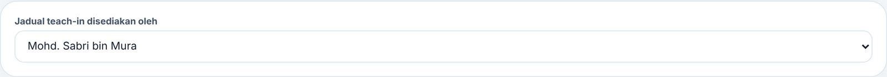
Langkah 6: pilih nama penyedia jadual, kemudian tekan ⚡ Jana Guru Ganti.
Kad-kad ini menerangkan apa yang berlaku pada tarikh yang dipilih sahaja. Permohonan dan jual beli dikosongkan bila tarikh ditukar.
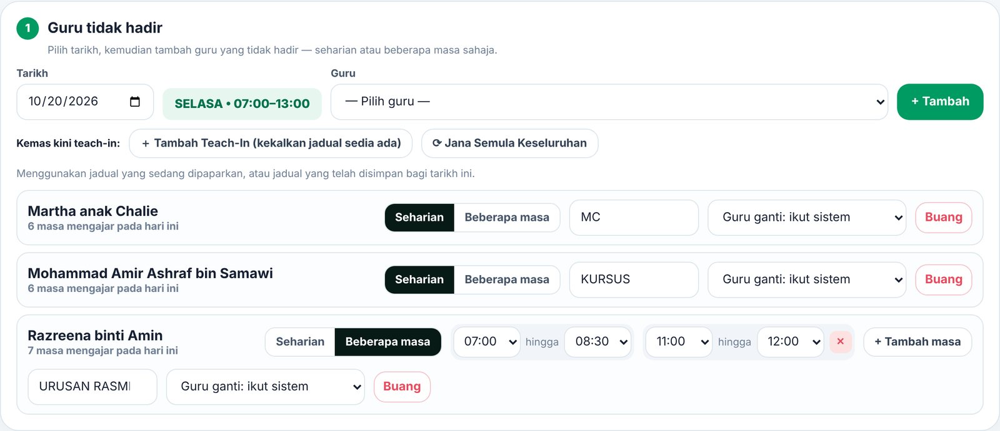
Pilih guru → Seharian atau Beberapa masa. Untuk dua julat berasingan (cth. 7.00–8.30 dan 11.00–12.00) tekan + Tambah masa. Isi Sebab (MC, KURSUS, URUSAN RASMI…).
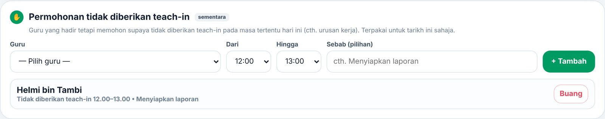
Guru hadir tetapi memohon tidak diberi teach-in pada masa tertentu. Guru itu tidak dipilih pada masa tersebut; grid menandakannya MOHON.
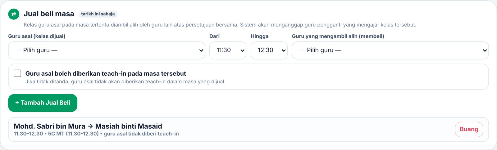
Kelas guru asal diambil alih oleh guru lain (persetujuan bersama). Kelas dianggap milik guru pembeli hari itu. Guru asal tidak diberi teach-in pada masa itu, kecuali kotak ditanda.
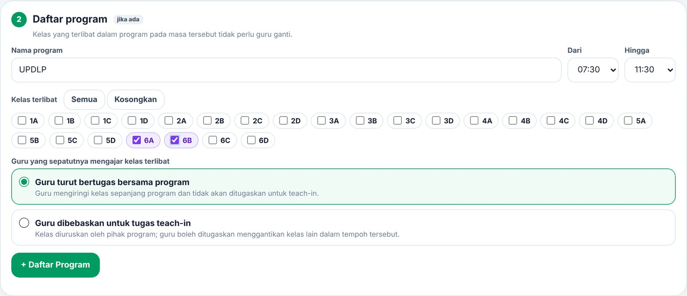
Kelas yang terlibat dengan program tidak perlu guru ganti. Pilih sama ada guru kelas itu turut bertugas bersama program atau dibebaskan untuk teach-in.
Tetapan menentukan siapa boleh dipilih dan berapa banyak. Semakin ketat tetapan, semakin besar kemungkinan ada petak yang tidak terisi.
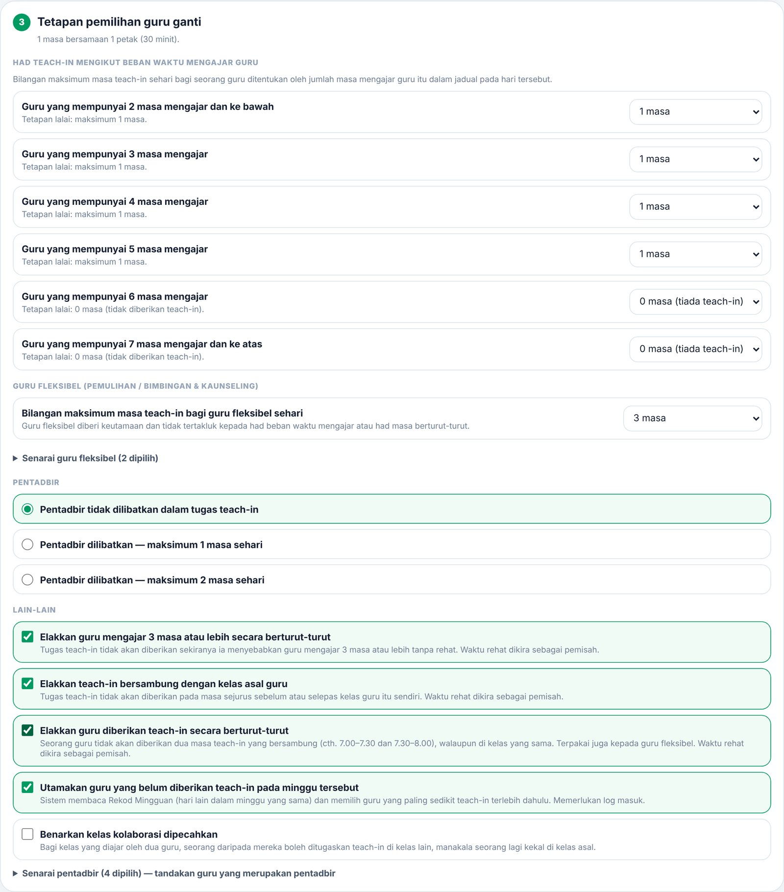
Dikira daripada jumlah masa mengajar guru dalam jadual hari itu.
| Guru yang mempunyai | Lalai |
|---|---|
| 4 masa dan ke bawah | 1 masa |
| 5 masa | 1 masa |
| 6 masa | 0 (tiada) |
| 7 masa dan ke atas | 0 (tiada) |
| Tetapan | Lalai |
|---|---|
| Maks teach-in guru fleksibel (Pemulihan, B&K) | 4 masa (pilihan 0–4) |
| Senarai guru fleksibel | Muhammad Saifullah, Ku Muhammad Nadjri |
| Pentadbir | Tidak dilibatkan (atau maks 1 / 2 masa) |
| Senarai pentadbir | Fauzia, Helmi, Mohamad Nazimi, Sapri |
| Tetapan | Lalai | Maksud |
|---|---|---|
| Elakkan 3 masa atau lebih berturut-turut | AKTIF | Teach-in tidak diberi jika guru akan mengajar 3 petak (1½ jam) tanpa rehat. |
| Elakkan teach-in bersambung kelas asal | AKTIF | Tidak diberi sejurus sebelum atau selepas kelas guru itu sendiri. |
| Elakkan teach-in berturut-turut | AKTIF | Seorang guru tidak diberi dua teach-in bersambung, termasuk guru fleksibel. |
| Utamakan guru belum teach-in minggu ini | AKTIF | Membaca Rekod Mingguan. Perlu log masuk dan Simpan Rekod setiap hari. |
| Benarkan kelas kolaborasi dipecahkan | TIDAK | Bagi kelas dua guru, seorang boleh dilepaskan untuk teach-in di kelas lain. |
Daripada guru yang layak (tidak melanggar tetapan), sistem memilih mengikut turutan ini:
Kad ini hanya muncul selepas log masuk dengan akaun berkenaan. Tetapan disimpan dalam pangkalan data dan terpakai kepada semua guru yang log masuk semasa menjana.
| Kad | Siapa nampak | Fungsi |
|---|---|---|
| ★ Penyelaras Teach-In | Admin sahaja | Melantik guru sebagai Penyelaras Teach-In (cth. Cikgu Haslinda). Penyelaras mendapat akses kad Sekolah Ganti dan Guru Praktikum; akses lain ICT HUB tidak berubah. |
| S. Sekolah ganti | Admin & Penyelaras | Tetapkan tarikh persekolahan ganti (cth. Sabtu) dan jadual hari yang digunakan (Isnin–Jumaat). Semua yang memilih tarikh itu akan nampak "SABTU (sekolah ganti • jadual ISNIN)" dan boleh menjana teach-in seperti biasa. Slip, PDF dan rekod menggunakan hari sebenar (SABTU). |
| A. Sekatan teach-in | Admin sahaja | Guru tidak dipilih pada hari / tarikh dan masa tertentu (cth. bertugas). Guru lain tidak nampak sebabnya; guru itu hanya tertera "tidak tersedia". |
| P. Guru praktikum | Admin & Penyelaras | Daftar guru praktikum, tempoh, guru asal dan kelas yang diambil alih. Guru praktikum boleh diberi teach-in. Jika dia tidak hadir, guru asal mengambil alih semula kelas itu secara automatik. |
Selepas Jana, tiga bahagian dipaparkan: slip teach-in, grid semua guru dan senarai masa ganti.
Kotak statistik. Pastikan Tidak terisi = 0 sebelum jadual diedar.
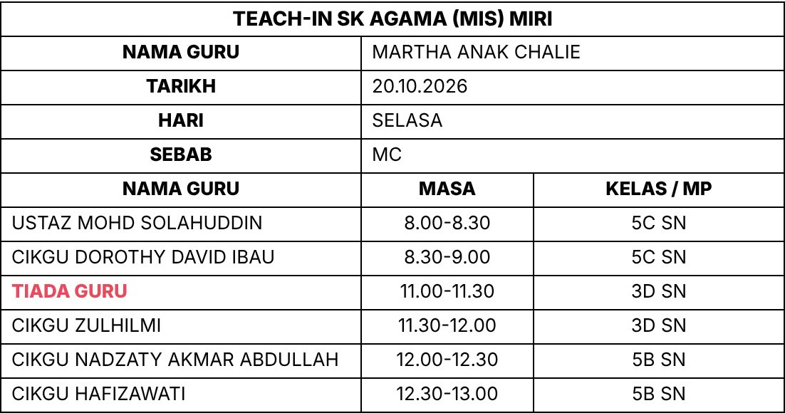
| Tertulis | Maksud |
|---|---|
| CIKGU NAMA | Guru ganti biasa. Guru Bahasa Arab dan Pendidikan Islam ditulis USTAZ (lelaki) atau USTAZAH (perempuan) |
| KOLABORASI – CIKGU NAMA | Kelas dua guru; pasangan hadir, cukup maklumkan dia |
| Nama program | Kelas terlibat program (cth. UPDLP) |
| CIKGU NAMA (GURU ASAL) | Guru asal ambil alih kelas guru praktikum |
| TIADA GURU | Tiada guru layak — lihat Bahagian 9 |
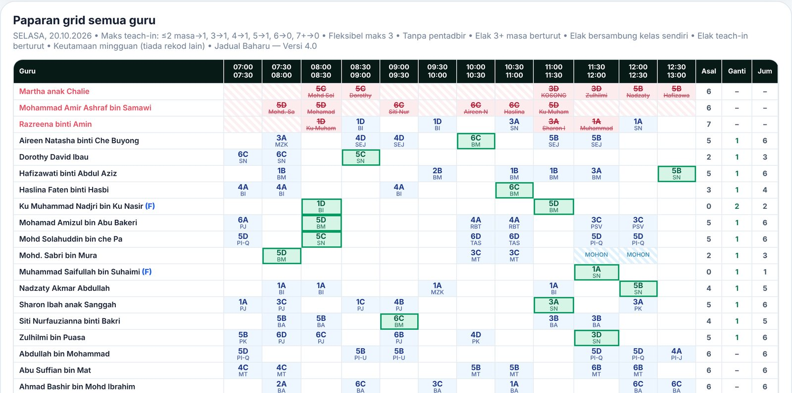
| Warna / tanda | Maksud |
|---|---|
| Biru muda | Kelas biasa guru |
| Hijau berbingkai | Masa teach-in yang diberikan |
| Merah (dipotong) | Kelas guru tidak hadir — nama guru ganti di bawahnya, atau KOSONG |
| Ungu | Diganti program / kelas jual beli (⇄) |
| Kuning | Kolaborasi, atau teach-in TAMBAHAN / BERUBAH (mod kemas kini) |
| Jalur biru MOHON | Permohonan tidak diberikan teach-in |
| (P) / (F) / (PR) | Pentadbir / Guru fleksibel / Guru praktikum |
| Asal / Ganti / Jum | Masa mengajar asal, teach-in, jumlah |
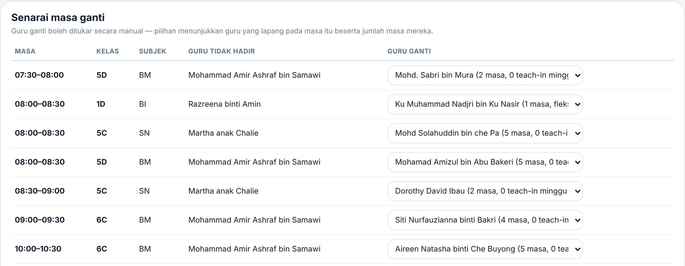
Setiap petak ada dropdown. Pilihan menunjukkan beban guru, teach-in minggu ini dan sebab jika guru itu melanggar tetapan (cth. "teach-in berturut-turut"). Guru yang melanggar tetapan masih boleh dipilih secara manual. Slip dan grid dikemas kini serta-merta.
| Butang | Fungsi |
|---|---|
| Salin teks WhatsApp | Salin jadual dalam bentuk teks untuk ditampal ke group. |
| Cetak Grid | Grid semua guru, satu muka A4 melintang. |
| Cetak Teach-In | Slip A4 menegak, 3 slip satu muka, dengan nama penyedia di hujung. |
| Simpan Rekod | PDF ke Google Drive: TEACH IN / MINGGU NN / DD.MM.YYYY HARI.pdf dan kemas kini Rekod Mingguan. Perlu log masuk. Simpan semula pada hari sama akan menggantikan rekod lama. |
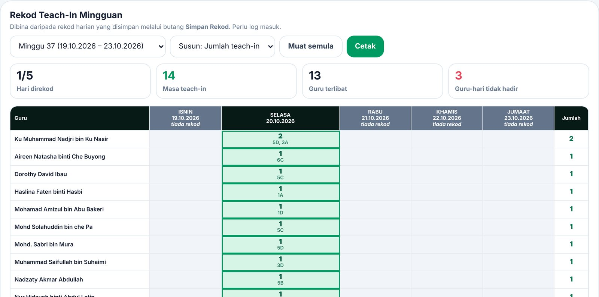
Pilih minggu persekolahan. Grid semua guru × Isnin–Jumaat: bilangan teach-in dan kelas, sebab tidak hadir dan jumlah seminggu. Lajur kelabu = hari belum disimpan. Jika Sabtu minggu itu ditetapkan sebagai sekolah ganti, lajur SABTU (sekolah ganti) turut dipaparkan.
Dua butang di bawah tarikh. Sistem menggunakan jadual yang sedang dipaparkan; jika tiada, jadual yang telah disimpan bagi tarikh itu dimuatkan (perlu log masuk).
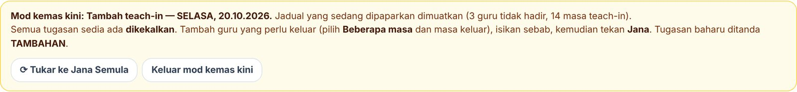
Jalur kuning mod kemas kini. Mod boleh ditukar dengan butang di dalamnya; tekan Keluar mod kemas kini untuk kembali ke mod biasa.
Petak TIADA GURU bermaksud tiada guru yang memenuhi semua tetapan pada masa itu. Ia biasa berlaku pada hari ramai guru tidak hadir.
| Mesej di bawah skrin | Penyelesaian |
|---|---|
| Tambah sekurang-kurangnya seorang guru tidak hadir | Tambah guru di Kad 1 |
| Pilih guru yang menyediakan jadual teach-in | Pilih nama dalam "Jadual teach-in disediakan oleh" |
| Semak masa tidak hadir: masa tamat mesti selepas masa mula | Betulkan julat masa guru tidak hadir |
| Tiada jadual pada hari ini | Tarikh ialah hujung minggu atau cuti. Jika hari itu sekolah ganti, minta Admin / Penyelaras menetapkannya dalam kad Sekolah ganti |
| Gagal membaca jadual / halaman kosong | Semak internet, muat semula (Ctrl+F5) |
| Mesej | Penyelesaian |
|---|---|
| Sila log masuk | Log masuk Google (DELIMa) di bahagian atas halaman |
| Gagal menyimpan rekod / Failed to fetch | Semak internet dan cuba semula; jika berterusan, maklumkan Unit ICT |
| Rekod mingguan tidak dikemas kini | PDF sudah di Drive; tekan Simpan Rekod sekali lagi atau maklumkan Unit ICT |
| Soalan | Jawapan |
|---|---|
| Kenapa hasil berubah setiap kali tekan Jana? | Sistem mencuba 40 susunan rawak dan memilih yang terbaik. Tekan sekali lagi untuk susunan lain jika tidak berpuas hati. |
| Kenapa guru lapang tertentu tidak digunakan? | Biasanya terhalang oleh tetapan (had beban, berturut-turut, bersambung kelas). Sebabnya tertera di dropdown Senarai masa ganti. |
| Kenapa guru yang sama selalu dipilih? | Pastikan keutamaan mingguan aktif, anda log masuk dan Simpan Rekod ditekan setiap hari. |
| Kenapa guru praktikum / sekatan tidak diambil kira? | Tetapan itu hanya dimuatkan selepas log masuk. |
| Kelas dua guru, seorang tidak hadir — perlu guru ganti? | Tidak. Slip tulis KOLABORASI dengan nama pasangan; cukup maklumkan dia. |
| Jadual sudah diedar, seorang guru perlu keluar? | Gunakan ＋ Tambah Teach-In supaya tugasan sedia ada kekal. Gunakan ⟳ Jana Semula Keseluruhan hanya jika mahu semua disusun semula. |
| Seorang guru mahu masuk semua kelas guru yang tidak hadir? | Dalam baris guru tidak hadir, pilih Semua kelas → nama guru. |
| Hari Sabtu sekolah ganti tetapi tiada jadual? | Admin / Penyelaras perlu menetapkan tarikh itu dalam kad Sekolah ganti. |
| Tetapan saya berbeza di peranti lain? | Tetapan disimpan dalam pelayar setiap peranti. Semak Kad 3 sebelum Jana. |
| Siapa perlu dihubungi? | Unit ICT untuk masalah sistem; Penyelaras Teach-In untuk keputusan pemilihan guru. |